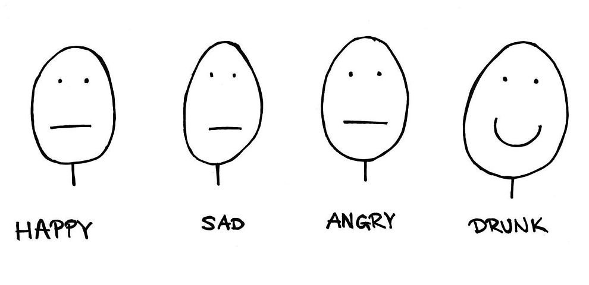
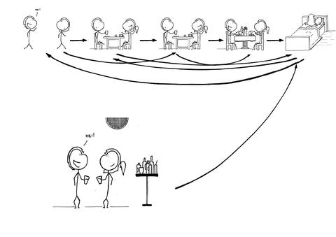
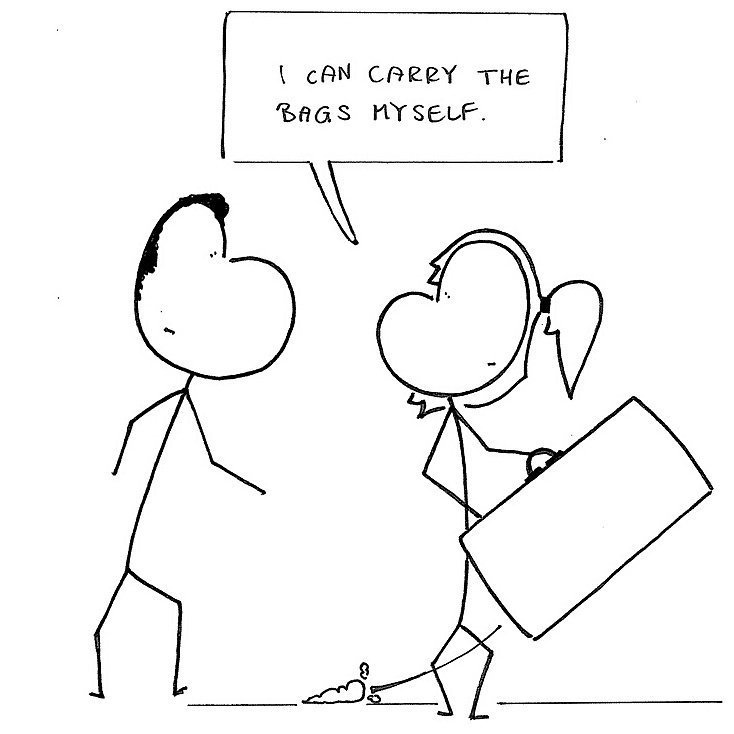
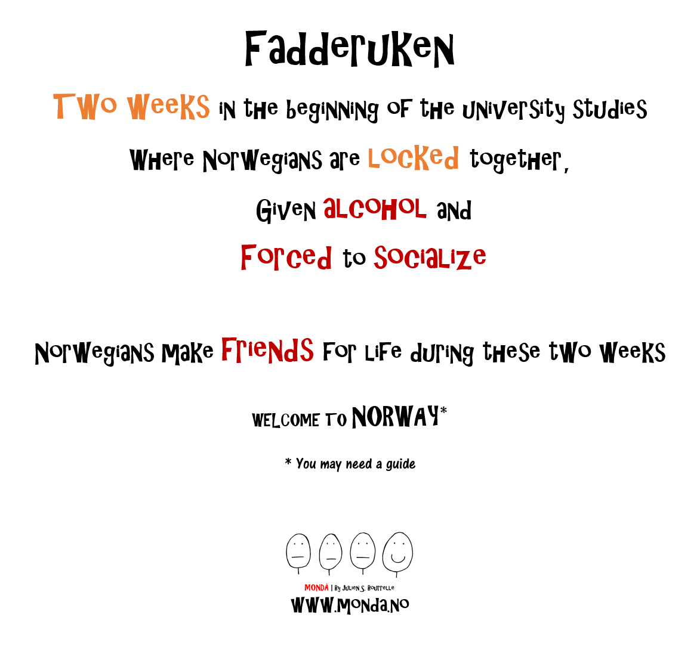
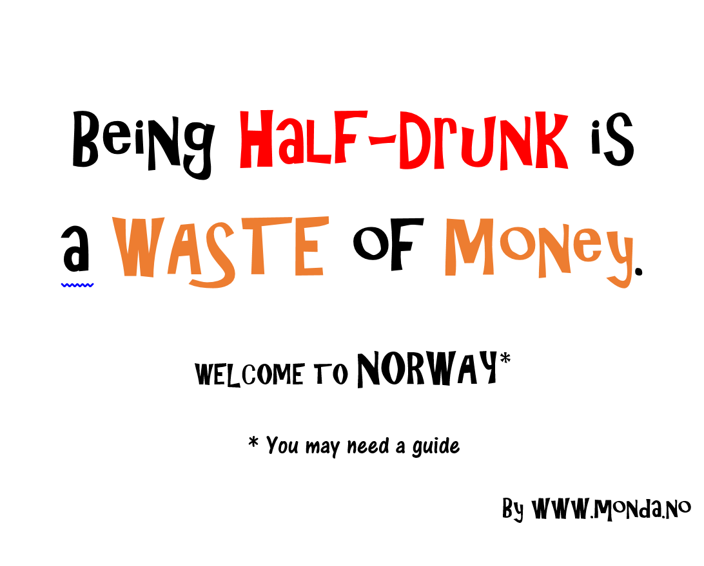
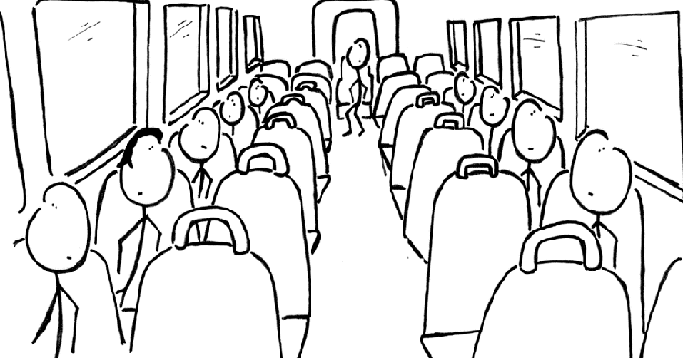

Survival Guide
Decoding Norwegians and their culture might seem a daunting task, but several other foreigners have already laid down useful groundwork for you! Follow in their footsteps as you explore the various aspects of life in Bergen, and the advice that they give. Select from various categories of life in Bergen for tips and tricks.
Dating in Norway
The normal dating timeline VS Norwegian dating timeline. If she wakes up with you the next day you can invite her on a date. if that works well move back to the end
Another important thing is that norwegian women might seem rude when a boy tries to be romantic by carrying her bag,open a door or pay for the date. She is not trying to be rude, but are accustomed to and concerned abut equality. So do not worry, it does not meen that she does not like you.
Making friends (Is it possible?)
In the 21st century there is only networking.
Student life in Bergen
Surviving financially (Is it possible?)
If you have not noticed yet, Norway is really expensive. Almost everything is expensive, but espacially alcohol. This is the reason why pre-party(or vors as we call it) is so common here. It basically means that norwegians by alot of alcohol in the store(or vinmonopolet where you by all alcohol over 4,5%), and get drunk at home with friends before going out on town.
Public transportation
Norwegians is polite by letting people be alone. You might therefor get some strange looks if you sit beside someone in the bus if it is empty double seets. This is also the reason why they might not seem that intrested if you start to talk to them. They are just not used to interacting with strangers (unless they are drunk, but we will come back to that). So the Norwegian way is to sit alone with your own thoughts. Here in Bergen the transportation company is Skyss. In their website you can find timetables and a transportation planner. You can find their website here
Skyss also have a ticket app and a travel planner app.